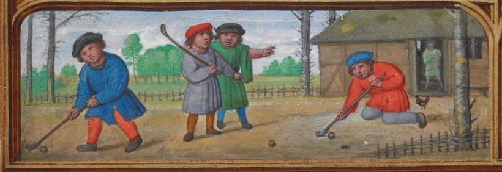
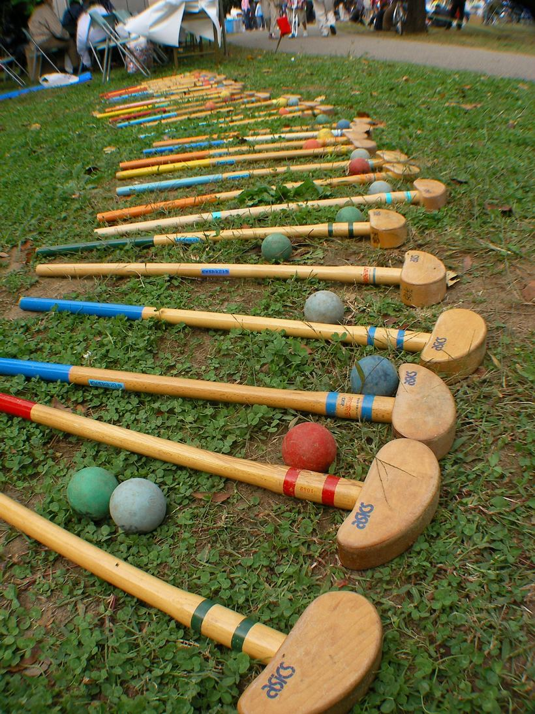
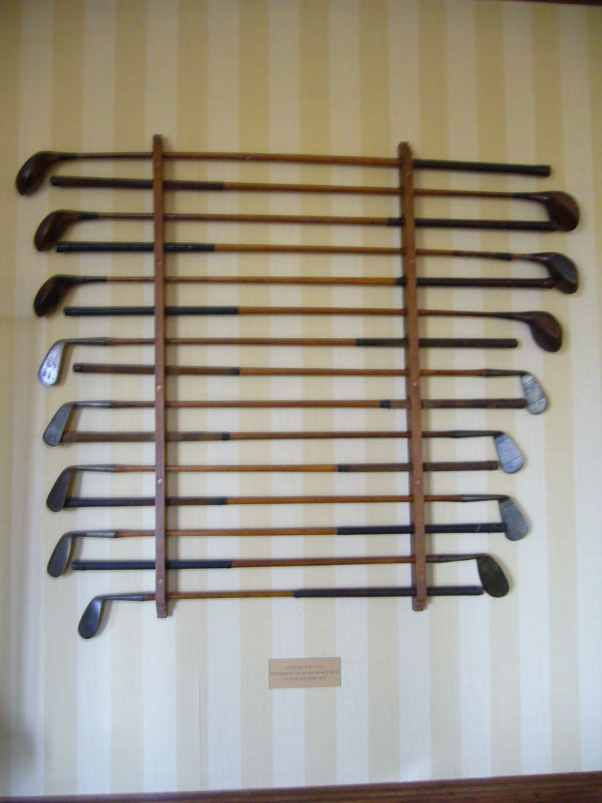
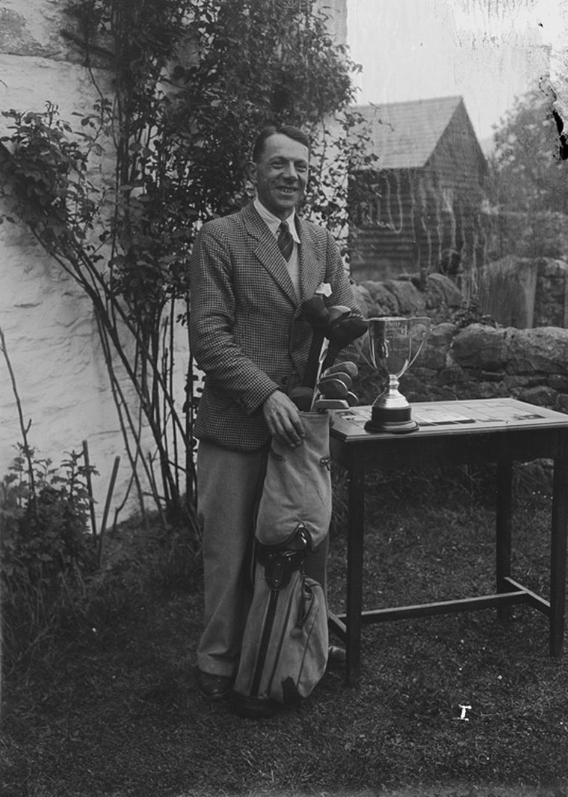
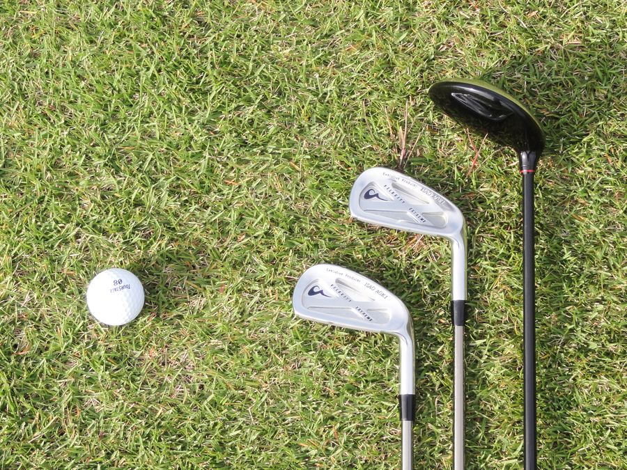

우리가 지금 손에 쥔 티타늄 드라이버는 사실 아주 먼 길을 걸어왔습니다. 골프의 뿌리를 따라가면 양치기의 막대기와 들판의 돌멩이까지 거슬러 올라가죠. 오늘은 이 작은 공이 건너온 600년의 시간을 따라가 봅니다.
그래서, 골프는 어디서 시작됐을까요

사실 '골프의 기원'은 지금도 논쟁거리입니다. 네덜란드에는 막대로 공을 쳐서 목표물에 맞히는 '콜프(kolf)'라는 놀이가 있었고, 로마 시대에도 깃털을 채운 공을 막대로 치는 비슷한 놀이가 있었다고 전해집니다.
하지만 오늘날 우리가 아는 형태의 골프 — 홀(구멍)에 공을 넣는 게임 — 가 자리 잡은 곳은 스코틀랜드입니다. 15세기 스코틀랜드의 해안 모래언덕(링크스)에서 사람들은 막대로 공을 쳐 토끼굴 같은 구멍에 넣으며 놀았죠.
공과 클럽의 진화

초창기 공은 나무를 깎아 만들었습니다. 이후 가죽 주머니에 새 깃털을 가득 채워 넣은 '페더리(featherie)' 공이 등장했는데, 하나 만드는 데 꼬박 하루가 걸려 무척 비쌌습니다. 19세기 중반에는 고무나무 수액으로 만든 '거타퍼처(guttie)' 공이 나오면서 값이 뚝 떨어졌고, 골프가 대중에게 퍼지는 계기가 됐죠.
나무 자루의 시대, 히코리

지금은 클럽 자루가 강철이나 카본이지만, 20세기 초까지만 해도 히코리(hickory)라는 단단한 나무로 만들었습니다. 나무라 잘 휘고 부러져서, 골퍼들은 늘 여분의 클럽을 들고 다녔죠.
클럽 이름도 지금과 달랐습니다. 숫자(7번 아이언) 대신 매시, 니블릭, 클리크 같은 고유한 이름으로 불렀어요. 영화나 골프 박물관에서 이런 옛 이름을 보면, 그게 바로 이 히코리 시대의 흔적입니다.
'18홀'은 어쩌다 정해졌을까

골프의 '성지'로 불리는 곳이 스코틀랜드의 세인트앤드루스(St Andrews)입니다. 원래 이곳 코스는 22홀이었는데, 1764년 몇 개의 짧은 홀을 합치면서 18홀이 됐습니다. 이 코스가 워낙 권위 있다 보니, 18홀이 자연스럽게 전 세계 표준이 됐죠.
오랫동안 떠돌던 "위스키 한 병이 18잔이라 18홀"이라는 이야기는 사실이 아닌 낭설입니다. 진실은 그저 코스 정비의 결과였습니다.
클럽하우스와 대회의 시대

1860년, 세계에서 가장 오래된 메이저 대회 '디 오픈(The Open)'이 시작됐습니다. 이 무렵부터 곳곳에 골프 클럽이 생기고, 대회와 챔피언이 등장하면서 골프는 하나의 근대 스포츠로 완성됐습니다. 그립법 편에서 만난 해리 바든도 바로 이 시대의 스타였죠.
그리고, 오늘의 골프

20세기 들어 강철 샤프트가 히코리를 대체했고, 이후 티타늄과 카본이 등장하며 공은 더 멀리, 더 정확하게 날아가게 됐습니다. 측정 장비와 데이터 분석까지 더해진 지금, 골프는 그 어느 때보다 정교한 스포츠가 됐죠.
하지만 본질은 600년 전과 똑같습니다. 막대로 공을 쳐서 구멍에 넣는 것. 도구가 아무리 발전해도, 결국 마지막 한 뼘은 사람의 손과 감각이 결정합니다. 그래서 골프는 오늘도 우리를 설레게 합니다.